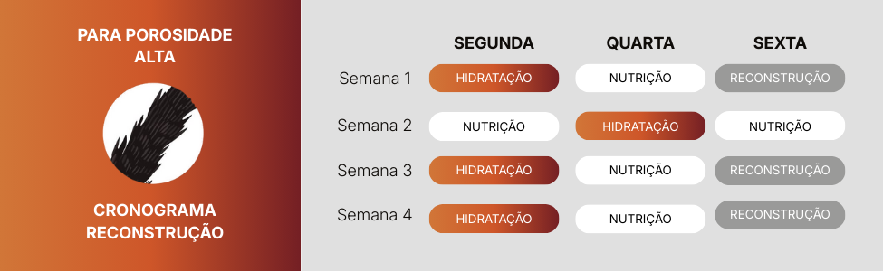
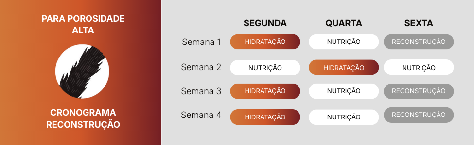

GENE AFRO
GENE AFRO
Nesta seção você encontra orientações para montar um cronograma capilar adaptado ao seu tipo de fio e às necessidades da sua porosidade.
Identificação da Etapa (Hidratação, Nutrição ou Reconstrução). Ajuda a equilibrar as necessidades do cabelo ao longo do mês.
Orientações de Aplicação e Técnicas. A forma de aplicar muda completamente o resultado.
Um cronograma capilar é organizado a partir das três principais etapas de tratamento hidratação, nutrição e reconstrução e cada uma delas atende a necessidades diferentes do fio. A hidratação repõe água e mantém o cabelo macio; a nutrição devolve os lipídios que controlam o frizz e definem os fios; e a reconstrução repõe proteínas, dando força e resistência. Porém, para que o cronograma seja realmente eficaz, é importante considerar também a porosidade do cabelo, que indica o quanto os fios conseguem absorver e reter tratamento.

 
